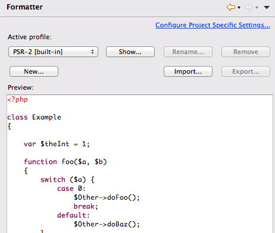
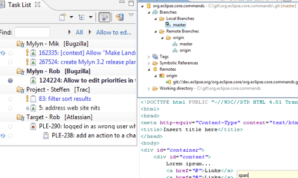
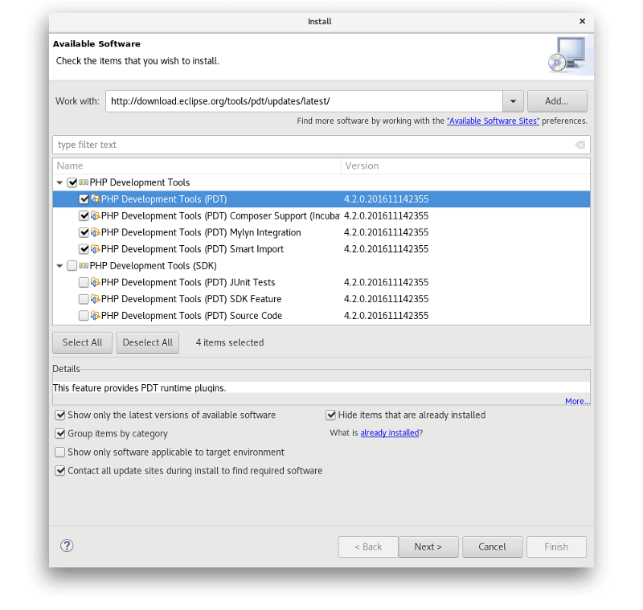

The PHP IDE project delivers a PHP Integrated Development Environment framework for the Eclipse platform. This project encompasses the development components necessary to develop PHP-based Web Applications and facilitates extensibility. It leverages the existing Web Tools Project in providing developers with PHP capabilities.
To find out more about us, you should check out:
Project details
Who's involved, project plan, all project resources and more.
PDT Forums and Wiki
Users discussions board, ask and answer questions.
PDT on Github
Latest code, issue reports, feature requests and more.
Developers mailing list
Get in touch with our team.
Syntax Highlighting 
Content Assist
Code Formatter 
Quick Outline
Code Templates
Code Navigation 
PHP Debugging
Syntax Validation 
Power of Eclipse Ecosystem 
The essential starting point for PHP developers, including a PHP language support, a Git client, XML Editor and Mylyn.
Click on the buttons below to start downloading package for specific OS.
In Eclipse, click Help -> Install New Software and work with *: http://download.eclipse.org/tools/pdt/updates/3.3.2
If you're looking for developer builds, try out **: http://download.eclipse.org/tools/pdt/updates/3.4-nightly
All downloads are provided under the terms and conditions of the Eclipse.org Software User Agreement unless otherwise specified.
* - Latest stable: http://download.eclipse.org/tools/pdt/updates/latest/
** - Latest nightly: http://download.eclipse.org/tools/pdt/updates/latest-nightly/
This packages contain PDT p2 repository, which can be used to install PDT in Eclipse without access to Eclipse.org
PDT is an Open Source project and we welcome everyone who's interested to contribute his or her source code or help project in some other way. Visit our wiki page to learn how to get source code and build it.
Don't hesitate to nurture PDT developers team with your questions and hit our mailing list.